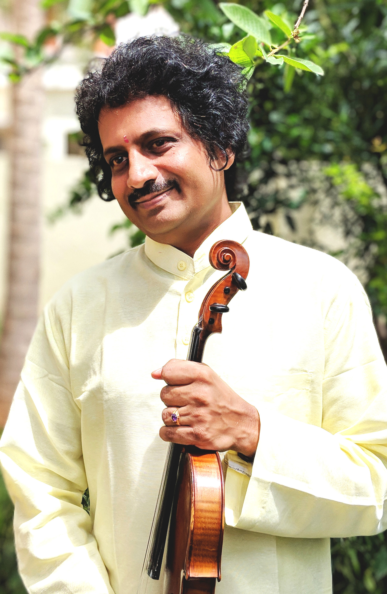
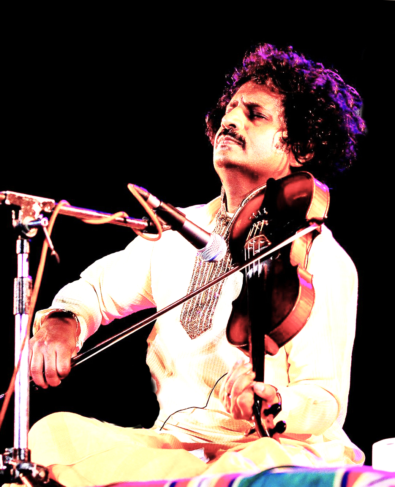
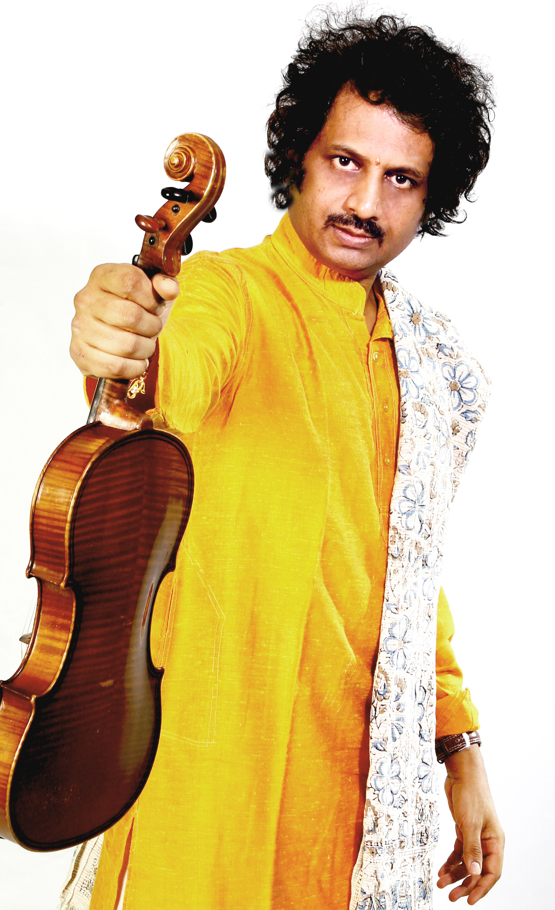
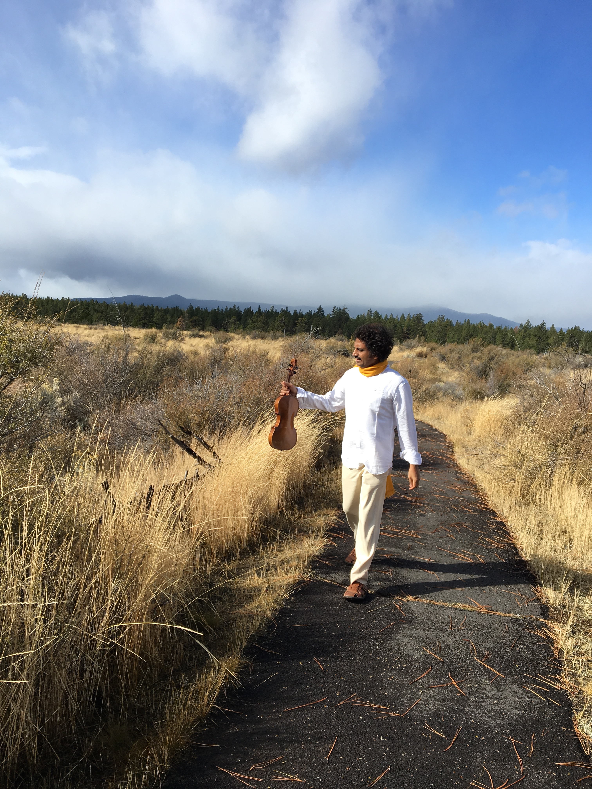
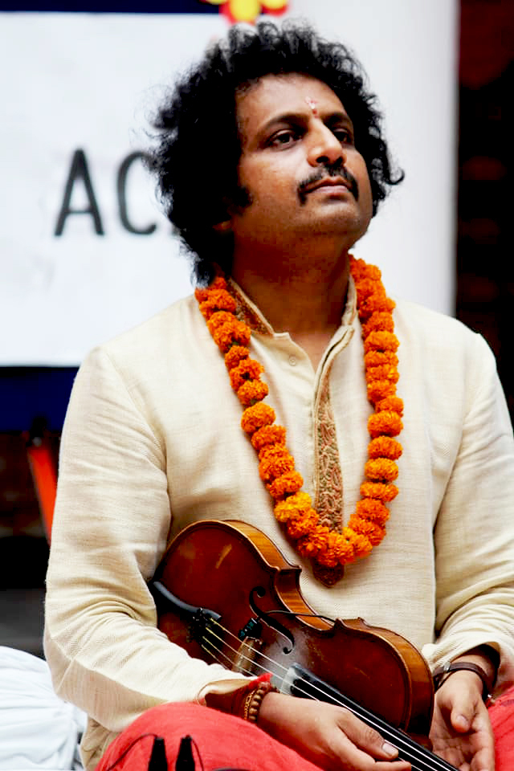
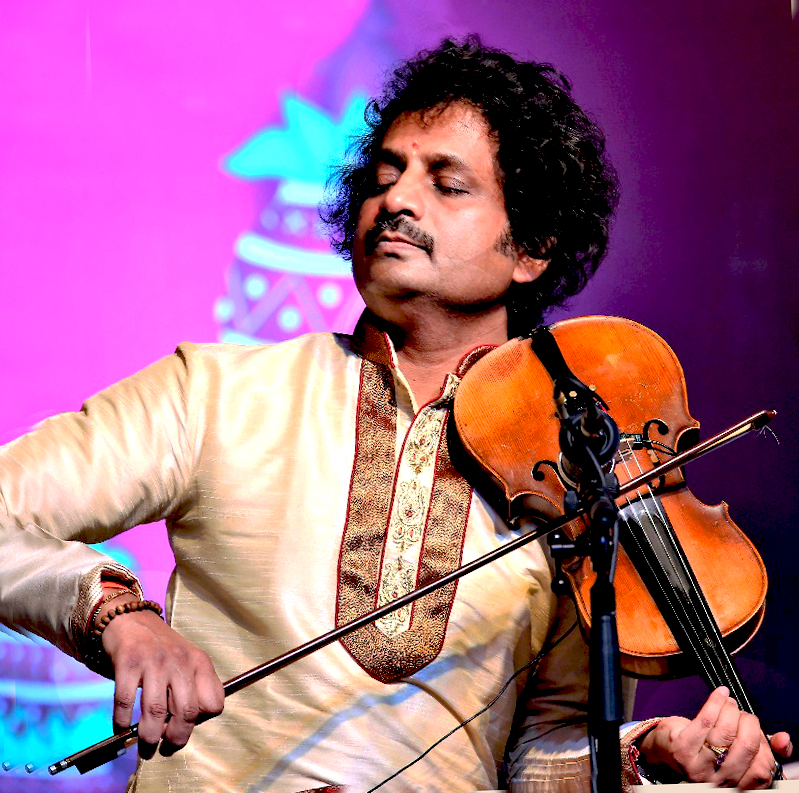
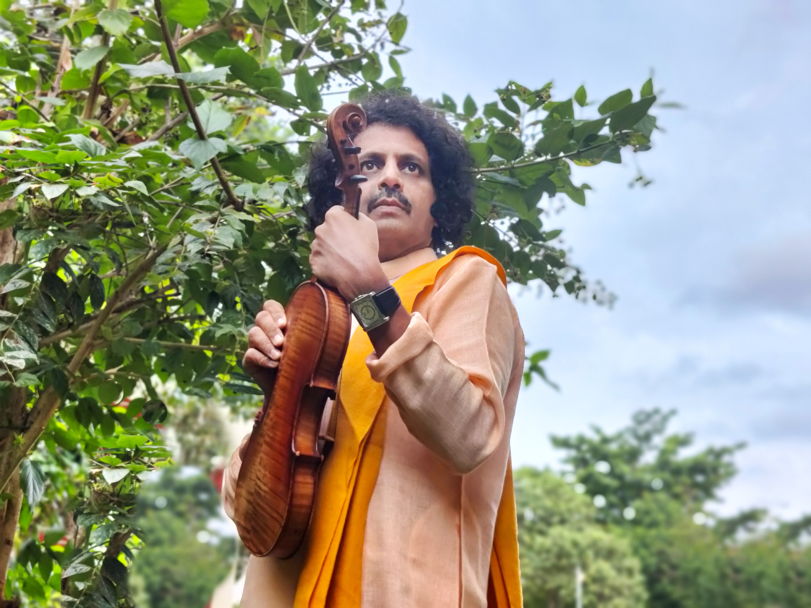
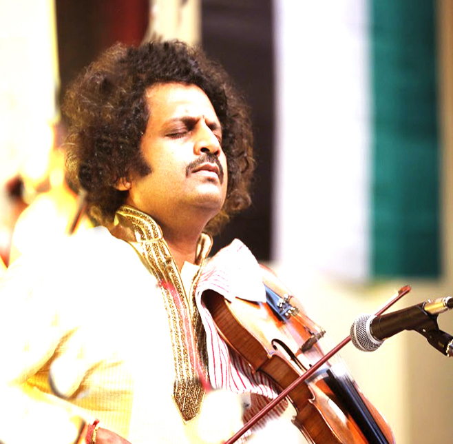

Violin Maestro of India
Violin Maestro · Composer · Scholar · Cultural Ambassador · National President, Samskara Bharathi
"Music expresses that which cannot be said
and on which it is impossible to be silent."
As a young boy, Manjunath was never initially drawn to music — despite growing up in one of Mysore's most celebrated musical households. His father, the great Vidwan Prof. S. Mahadevappa, and elder brother Mysore Nagaraj were established violinists. The family breathed Carnatic music. And yet, young Manjunath remained unmoved — until one evening changed everything forever.
After a concert, the entire ensemble was garlanded on stage. The boy who had sat quietly behind his father for four hours received nothing. The organiser made a promise: perform next year, and a garland would await. That single moment of wounded pride launched one of the most extraordinary careers in the history of Indian classical music.
In the early 1990s, a young Indian violinist entered Princeton University wearing a dhoti and sat cross-legged on the floor with his violin. The next morning, every Western violinist at the workshop arrived in a dhoti, seated on the floor. This is the power of a tradition embodied completely.
From Royal Albert Hall London to the Sydney Opera House, from the World Music Festival Chicago to the Esplanade Theatre Singapore, Dr. Manjunath has enthralled audiences across more than 53 countries. The Los Angeles Times warmly noted that he has "crossed over so many boundaries to create Music wonder." Bharat Ratna Pandit Ravi Shankar, who attended his live concert in San Diego in 2012, admired and called him the 'Prince of Mysore.'
Dr. Manjunath is the National President of Samskara Bharathi — the largest and one of the most prestigious cultural organisations in the country. His passion, commitment and dynamic vision in serving the legacy of Samskara Bharathi are truly inspiring, as he continues to preserve and spread India's rich cultural heritage alongside his musical mission.
Violin Maestro · Mysore, India

♩From Royal Albert Hall to the Sydney Opera House, from the Jazzar Festival in Switzerland to the UNO Theatre in Sweden, Dr. Manjunath has carried Indian classical music to 53+ countries across every continent.
Violin · Government of India · Conferred by the President of India at Rashtrapati Bhavan, New Delhi
Awarded by the nation's premier academy of performing arts — Dr. Manjunath stands among the youngest-ever recipients of this honour in the Violin category, a recognition representing the absolute pinnacle of artistic achievement in Indian classical music.
Government of Karnataka
Music Academy, Bangalore
Music Academy, Chennai
Kartik Fine Arts, Chennai · 2022
Karnataka Ganakala Parishath · 2020
Sri Kanchi Kamakoti Peetham
American Institute of World Culture
University of Oklahoma, USA
National · 2018
National Recognition
National
Indian Fine Arts Society, Chennai
University of Mysore · First Rank
Mysore Brothers · 2024
University of Mysore
National
ACWS — New Delhi
Sri Ganapathi Sachidananda Ashram
National Recognition
National
Rasikapriya — New Delhi
Shanmukhananda Fine Arts, Mumbai
USA
India's Yoga Anthem commissioned by the Centre for Soft Power. A 5-minute collaboration of 20+ world artists — Indian and international. Composed in the brand-new Raga Bharata, named after India's legendary first emperor. Released at the British Parliament on World Yoga Day, June 21, 2019.
Explore Yoga Niyoga →A global humanitarian response to the pandemic. Twenty musicians from coronavirus-affected nations — including Wang Ying from Wuhan, China. Launched by ICCR in 150+ countries. Lyrics by Sri Ganapathi Sachchidananda Swami. "A time for social distancing, not emotional distancing."
Watch Life Again →A unique music-play composed and directed by Dr. Manjunath for Bhoomija Trust. Features a 20-member youth orchestra with original compositions. Press: "a perfect synchrony with Carnatic idioms and western presentation." Collaborators: S. Surendranath, Srinivasa Prabhu, S.G. Vasudev.
Read The Hindu Review →Dr. Manjunath has created Raga Yaduveera Manohari — composed for the Mysore Royal Family's wedding (June 2016) — and Raga Bharata, verified by scholars as a genuinely new melodic personality. Creating a raga is among the rarest achievements in all of Carnatic music.
Read: Raga Yaduveera →Indian Classical & Hindustani Artists
International Musicians
| Bachelor of Music | University of Mysore — First Rank |
| Master of Music | University of Mysore — First Rank, 4 Gold Medals |
| Ph.D | University of Mysore — Thesis on the Violin |
| Cultural Ambassador | University of Mysore (Nominated) |
| School | JSS High School, Mysore |
| World First | First Indian Violinist to conduct a workshop at the International Violin Conference, San Diego |
| Oxford 2018 | First Indian Violin concert at Oxford University, Faculty of Music |
| Princeton | Workshop where Western violinists adopted Indian tradition spontaneously (Early 1990s) |
| Cambridge | Mysore Brothers perform at Cambridge University (2023) |
Department of Music, University of Mysore
Teaching, mentoring, supervising PhD research scholars
Samskara Bharathi — Largest Cultural Organisation of India
Passion, commitment & dynamic vision in preserving India's cultural legacy
Government of India
Republic Day & Independence Day performances — Slovenia, Sri Lanka & Iran
Sri Kanchi Kamakoti Peetham
Tantri Vadya Shiromani
Karnataka Ganakala Parishath · 2020
University of Mysore (Nominated)
Acclaimed by the world's finest publications — from The Statesman and Los Angeles Times to BBC, ABC Australia, Dinamani and Radio Chicago.
Prince of Mysore.
— Bharat Ratna Pandit Ravi Shankar · San Diego, USA · 2012
Crossed over so many boundaries to create Music wonder.
— Los Angeles Times
Undoubtedly one of the foremost Violinists in Carnatic style — precision, pinpoint accuracy — the sound having a velvety instrumental sheen; such is the perfection.
— The Statesman
Nobody has seen Heaven; nor has anybody returned from there and given an account of it. But when these two young violin virtuosos unfolded the hidden beauty of Raga at the Madras Music Academy, one could visualize what heavenly music could be like!
— Subbudu · Dinamani
The audience felt they had never before heard such a thrilling compendium of virtuosic technical mastery.
— Iowa State Daily · USA
Vibrant, enchanting melodic passages with a lushness that takes the breath away.
— Telegraph
The wonder kid Manjunath — the invaluable contribution of Mysore to Carnatic music.
— Indian Express
Dr. Manjunath's style of music dovetails nicely with the principles of Yoga.
— The Bulletin · USA
The lexicographic tradition and style of Mysore has found its homogeneous inheritance in the duo Mysore Nagaraj and Manjunath.
— The Hindu
An arresting virtuoso.
— Radio Chicago
Master instrumentalists — exceptionally gifted musicians with strict adherence to classicism.
— The Asian Reporter
The invitation to Dr. Manjunath to perform at the International Strings Conference is an honour for the country.
— The Hindu

Royal Palace of Milan — Milano Musica Festival, Italy. First Indian musician ever to perform at this historic venue.
Milan, Italy

Official portrait — the violin extended forward, a signature of a maestro carrying Indian classical music to every corner of the world.
Official Portrait

Common Thread Music Festival, Oregon USA — violin in hand, the maestro walks through the American landscape.
Oregon, USA

Garlanded with marigolds before a concert — the sacred ritual of classical performance in India. SPIC MACAY, Dehradun.
SPIC MACAY · Dehradun

In deep concert trance — eyes closed, bow drawn, surrendered to the raga. The purest image of a musician and his music becoming one.
Concert Performance · India

Draped in saffron — the colour of sacred art and renunciation — violin raised, looking skyward above the greens of Mysuru.
Mysuru · 2021

Playing Jana Gana Mana at an international concert — the national anthem on violin, the Tricolour behind him. The Cultural Ambassador in action.
International Concert · Adelaide, Australia